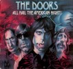
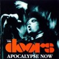

ALIVE (CD)
Leopard Records LCD 122-1, Italy, 1992 |
| 1.Roadhouse Blues/ 2.Texas Radio And The
Big Beat/ 3.Love He Two Times/ 4.Touch Me/
5.Horse Latitudes/ 6.Moonlight Drive (cover says
Moonlight River)/ 7.The End/ 8.Light My Fire |
| Sources: All tracks taken from the
official Doors video Dance On Fire). |
| Soundquality: |
 |
| Rarity Of Material: |
|
| Visual Attractiveness: |
|
Another uninteresting and boring CD taken from the
official video Dance On Fire. As usual, some
tracks are mislabeled: Roadhouse Blues is not from
the Hollywood Bowl performance and Moonlight Drive
was not taped live at the Jonathan Winters Show but is
the original version from the album Strange Days.
The soundquality is perfect and the cover is nice and
pretty unusual. What else? The colour booklet shows one
photo taken by Frank Lisciandro and one by Paul Ferrara.
Although "...It Was More Than Twenty Years
Ago" (as the back cover legitimates this
release) this CD is for the hard core collector only.
Just 34 minutes of playing time on a CD is a waste of
plastic.
ALL HAIL THE AMERICAN NIGHT
(2 CD in digipack)
Tuff Bites T.B. 95.1025, Germany/Luxembourg 1995 |
Disc One: 1.Alabama
Song-Back Door Man/ 2.Texas Radio & The Big
Beat/ 3.Love Me Two Times/ 4.The Unknown Soldier/
5.When The Music's Over 6.Tell All The People/
7.Alabama Song-Back Door Man/ 8.Wishful Sinful/
9.Build Me A Woman/ 10.The Soft Parade/
11.Interview with The Doors by Richard Goldstein
Disc Two: 1.Love Her Madly/
2.Back Door Man/ 3.Ship Of Fools-Land Ho!/ 4.The
Changeling/ 5.L.A.Woman/ 6.When The Music's Over/
7.The End |
Sources: Disc One - 1-5=Copenhagen TV
Studio, Copenhagen, Denmark, September 17th,
1968; 6-11=Critique Show, PBS TV, WNET, New York,
May 13th, 1969.
Disc Two - 1-6=State Fair Music Hall, Dallas,
December 11th, 1970, first show (not complete -
The End is missing, it was not taped); track 7=
Toronto Popfestival, Varsity Stadium, Toronto,
Canada, September 13th, 1969. |
| Soundquality: |
to |
|
|
|
|
 |
| Rarity Of Material: |
to |
|
|
|
|
| Visual Attractiveness: |
|
|
|
|
|
A fine release by Tuff Bites, a company which is known
for the characteristic drawings on their covers for their
digi-packs. Many of you might already know the Copenhagen
and Critique tracks, but even for those people it
seems to be worth getting this set. The soundquality of
both recordings is excellent, because they were taken
from master video copies. The interview is really
insightful and the tracks - well, we already know them,
but they are still great. Finally, for the first time on
CD we have The Doors' Dallas concert, which was never
available in good soundquality. But compared to what is
out on tape and has partly been published on some
inferior vinyl bootlegs and tapes this recording of
Dallas is much better than on other sources. Jim's voice
never sounded so lonely (especially in L.A.Woman),
he makes a few interesting lyrical variations (check Love
Her Madly) and The Doors seem to be very tired (just
listen to Robby Krieger's guitar). Good to have this
concert on CD now. A sad document of the end of The
Doors. This is almost the complete concert, just The
End played as an encore is missed (I doubt it was
ever taped). The bonus track is a great version of The
End recorded at the Toronto Popfestival. This song
was missing from the CD Toronto Popfestival 1969 Plus
Other Rarities (Too Drunk To Fuck TDTF 002). All
Hail The American Night is definitely recommended!
AN AMERICAN PRAYER (CD)
Ody 004 AAP 1, Germany 1994 |
I.Awake: Wake Up/ Ghost Song/ Dawn's
Highway/ Newborn Awakening II.To Come Of Age:
Black Polished Chrome/ Angels And Sailors/ Stoned
Immaculate
III.The Poet's Dreams: The Movie/ Curses,
Invocations
IV.World On Fire: American Night/ Roadhouse
Blues/ The World On Fire/ Lament/ The Hitchhiker
V.An American Prayer: Hour For Magic/ Freedom
Exists/ A Feast Of Friends |
| Sources: A vinyl copy of the official
album Jim Morrison - Music By The Doors, An
American Prayer |
| Soundquality: |
|
| Rarity Of Material: |
|
| Visual Attractiveness: |
|
It's certainly better to listen to the crackling wood
in your fireplace than to put this counterfeit CD into
your CD player. Simply avoid this and buy the original
Elektra CD of An American Prayer, which certainly
is available in your local shop. There is no Elektra logo
on the cover or on the CD itself, so you can't be wrong
picking up the official release.
AN AMERICAN PRAYER + BONUS
TRACK (CD)
Kiss My Ass KMACD 005, Germany 1995 |
I.Awake: Wake Up/ Ghost Song/ Dawn's
Highway/ Newborn Awakening
II.To Come Of Age: Black Polished Chrome/ Angels
And Sailors/ Stoned Immaculate
III.The Poet's Dreams: The Movie/ Curses,
Invocations
IV.World On Fire: American Night/ Roadhouse
Blues/ The World On Fire/ Lament/ The Hitchhiker
V.An American Prayer: Hour For Magic/ Freedom
Exists/ A Feast Of Friends
VI.Bonus Track: Mystery Train Medley - People Get
Ready/ Baby Please Don't Go/ Mystery Train/
Crossroads (cover says Train Jam) |
| Sources: I.-V.=A tape copy of the
official album Jim Morrison - Music By The Doors,
An American Prayer; VI.=Center Coliseum, Seattle,
June 5th, 1970. |
| Soundquality: |
to |
| Rarity Of Material: |
|
| Visual Attractiveness: |
|
At least this counterfeit CD was taken from a tape
copy of An American Prayer, which means there are
no crackles to be heard (check the Ody 004 AAP 1
counterfeit of the same source). And at least you can
easily distinguish between the official release and this
counterfeit because of the bonus track. Get Jim's
Alive (Tuff Bites T.B. 94.1009) and the official
Elektra CD An American Prayer, and you have all
tracks in better soundquality. By doing so you do not
support counterfeit bootleggers.
AMERICAN PRAYER ALIVE (CD)
Lunatic LU 2004, Germany 1994 |
| 1.Roadhouse Blues/ 2.Break On Through/
3.Light My Fire/ 4.Five To One/ 5.Little Red
Rooster/ 6.Who Do You Love/ 7.A Little Game
(cover says Go Insane)/ 8.The Hill Dwellers/
9.People Are Strange/ 10.Love Street/ 11.Love Me
Two Times/ 12.The Soft Parade/ 13.Summer's Almost
Gone/ 14.Manish Boy. |
| Sources: Track 1-3= Rock'n'Roll Hall
Of Fame Induction performance with Eddie Vedder
on vocals, Century Plaza Hotel, Los Angeles,
January 12th,1993; 4= Center Coliseum, Seattle,
June 5th, 1970; 5+6= Pacific National Exhibition
Coliseum, Vancouver, June 6th, 1970; 7,8,10,11=
Konserthuset, Stockholm, September 20th, 1968,
first show; 9 and 13= Matrix Club, San Francisco,
March 7th, 1967; 12= Critique, PBS TV, WNET, New
York, May 13th, 1969; 14= Winterland, San
Francisco, December 26th, 1967. |
| Soundquality: |
to |
|
|
|
|
|
| Rarity Of Material: |
|
|
|
|
|
| Visual Attractiveness: |
|
|
|
|
|
Everybody seems to have these tracks already on numerous
other different CDs. The cover is very unusual, the tray
is of clear plastic ... but of course the title of the CD
is VERY misleading. Eddie's tracks with The Doors are in
excellent quality, by the way. This disc is for the hard
core collector only who needs to have everything,
worthless for anybody else. I only like the nice CD label
itself: It looks like a small VINYL disc (but they use
the same design on other artists' CDs, too).
APOCALYPSE NOW (CD)
Kiss The Stone KTS 267, Italy 1994 |
| 1.Five To One/ 2.Mack The Knife-Alabama
Song/ 3.Back Door Man/ 4.You're Lost Little Girl/
5.Love Me Two Times/ 6.When The Music's Over/
7.Wild Child/ 8.Money/ 9.Wake Up-.Light My Fire/
10.The End/ 11.The Unknown Soldier. |
| Sources: Tracks 1-10= Konserthuset,
Stockholm, September 20th, 1968, entire second
show; track 10= same as 1-9, but taken from the
first show. |
| Soundquality: |
|
|
|
|
|
 |
| Rarity Of Material: |
|
|
|
|
|
| Visual Attractiveness: |
|
|
|
|
|
Oh no, not another Stockholm CD I thought when I got this
one. But listening to it I changed my mind: This is the
definitive stereo version of the second Stockholm show.
The quality is very much better than on all other
releases, and if you think The Stockholm Tapes
(Document Records DR 010) was good, well, try this one.
Perfect! (I still can't get over that very patient
Stockholm audience!) Recommended!
ARCHANGEL (CD)
Fun Factory Fun 005, Germany 1993 |
| 1.Pipeline/ 2.Queen Of The Magazines/
3.Mystery Train/ 4.Soft Parade Intro/Whiskey,
Mystics And Men/ 5.Love Me Tender/ 6.Someday
Soon/ 7.Summertime/ 8.Who Scared You/ 9.Me And
The Devil Blues (cover says Woman Is A Devil)/
10.Rock Is Dead (cover adds Rock Me Baby, but
this is not on this CD; also: Rock Is Dead is not
complete). |
| Sources: 1,2,4,5,9 and 10= Studio
session for the album The Soft Parade, February
25th, 1969; 3+6= Center Coliseum, Seattle, June
5th, 1970; 7= Matrix Club, San Francisco, March
10th,1967; 8=Original version from LP Weird
Scenes Inside The Goldmine. Additional overdubbed
spoken poetry from Jim Morrison's poetry
recording in March 1969, Sunset Sounds Studios,
Los Angeles. |
| Soundquality: |
|
| Rarity Of Material: |
|
| Visual Attractiveness: |
|
One of the worst CDs in history. Made by the same guy
who also produced the awful bootleg CDs The Future Is
Murder and Replica Blues, it's the same shit
all over again: Another CD. Another 'Live In New
Orleans'. Another compilation of what has been
published before. Another compilation of what has been
mislabeled before. This time it is called Archangel.
DON'T BUY THIS RIP-OFF. This CD was not recorded in New
Orleans on the very last Doors concert with Jim Morrison
as the cover says. This CD was made of a tape distributed
by one American Fan, got overdubbed with some poetry from
the bootleg CD Orange County Suite (Document
Records DR 019) and it is horrible. The soundquality is
bad, the intention to rip-off the fans is bad, the cover
and the title are bad, and I must say that each CD made
by this bootlegger should be avoided by every fan. Each
copy you'll buy will give him money to produce another
one made of the same material (ehm: 'Live in New
Orleans'!). Dear people: THERE IS NO TAPE AND NO CD
AVAILABLE RECORDED LIVE IN NEW ORLEANS. Don't buy
rip-offs pretending to have tracks on recorded in New
Orleans!. I'm really getting mad at bootleggers who put
out CDs (or vinyl LPs) just to make money. And this Archangel
CD is there to make money. Your money. Keep your money.
Again: Like The Future Is Murder and Replica
Blues, avoid Archangel like dog's shit. FUCK
IT! Get Missing Links (Memorial Records Memorec
403); it's not just better, it's the real thing in good
quality with no overdubs and no fake dates.
ARCHIVES (Double CD)
Double Time Disc 002, Italy 1990 |
Disc One: 1.Alabama
Song-Back Door Man/ 2.Texas Radio & The Big
Best/ 3.Love Me Two Times/ 4.The Unknown Soldier/
5.When The Music's Over/ 6.The End/ 7.Wild Child/
8.Touch Me/ 9.Light My Fire
Disc Two: 1.Tell All The
People/ 2.Alabama Song-Back Door Man/ 3.Wishful
Sinful/ 4.Build Me A Woman/ 5.The Soft Parade/
6.Interview with The Doors/ 7.Hello I Love You
8.Summer's Almost Gone/ 9.End Of The Night/
10.Moon- light Drive/ 11.My Eyes Have Seen You/
12.Insane (cover says Not To Touch The Earth) |
Sources: Disc One - 1-5=TV Studio,
Copenhagen, Denmark, September 17th, 1968); 6=
Now Explosion CBC TV Show, O'Keefe Centre,
Toronto, Canada, August 8th, 1967; 7+8=Smothers
Brothers Comedy Hour, Los Angeles, December 4th,
1968; 9= Ed Sullivan Show, New York, September
17th, 1967.
Disc Two - 1-6=Critique Show, PBS TV, WNET, May
13th, 1969; 7-12= Demo Acetate, World Pacific
Studios, Los Angeles, September 2nd, 1965. |
| Soundquality: |
|
| Rarity Of Material: |
|
| Visual Attractiveness: |
|
Subtitle of this double bootleg CD is "The
Best Live In Concert 1966-1969", but there is no
song from 1966 and everybody knows there are many discs
out which are much better than this compilation. Well,
for those who have got all the common bootleg CDs this
one is quite useless. The quality is worse than on all
other CDs, but still quite acceptable, although all
tracks were taken from vinyl copies. The bootleggers took
the cover of the vinyl bootleg Archives, but the
content of this double CD has got no relations to the
vinyl having the same title.
AUTUMN LIFE - LIVE AT THE
MATRIX 1967 (CD)
Living Legend Records LLR CD 003, Italy 1988 |
| 1.People are Strange/ 2.Alabama Song/
3.Crystal Ship/ 4.Twentieth Century Fox/
5.Moonlight Drive 6.Summer's Almost Gone/
7.Unhappy Girl/ 8.Back Door Man/ 9.My Eyes Have
Seen You/ 10.Soul Kitchen/ 11.Get Off My Life/
12.Crawling King Snake/ 13.I Can't See Your Face
In My Mind |
| Sources: Matrix Club, San Francisco,
March 7th, 1967, first and second set. Same
tracks as on Crawling King Snakes (Back Trax CD
04-88004), but in slightly better soundquality. |
| Soundquality: |
|
| Rarity Of Material: |
|
| Visual Attractiveness: |
|
This was one of the first Doors CD bootlegs. Although
there are the same tracks as on Crawling King Snakes,
this was copied from a tape, not from a vinyl disc. But
besides the fine cover art, there is nothing special
about Autumn Life.
|